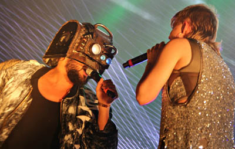
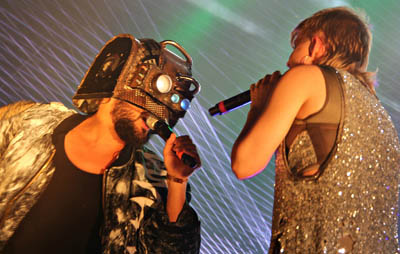
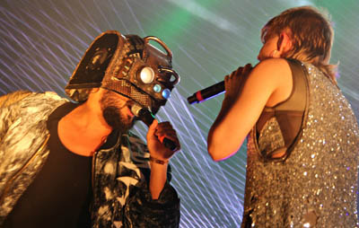

The Look
Promo
Live
 

Robin Miriam Carlsson (born 12 June 1979, Stockholm, Sweden), known as Robyn, is a Swedish recording artist. Robyn became known in the late nineties for her worldwide dance-pop hit "Do You Know (What It Takes)" from her debut album Robyn Is Here (1997). The popularity of her U.K. #1 song "With Every Heartbeat" and subsequent international album release Robyn (2005) in 2007 brought her mainstream success worldwide. Robyn released the first of a trilogy of albums to be released over the course of 2010 entitled Body Talk Pt. 1, in June of that year, peaking at number one. It was her first album since Robyn. The album's lead single "Dancing on My Own" was released a few weeks prior to the album's release; it became a hit single worldwide and earned her a Grammy Award nomination for the category of Best Dance Recording in 2010.
A follow-up album, Body Talk Pt. 2, was released on 6 September, entering straight at number one on the Swedish chart, and the final album of the trilogy, Body Talk, was released on 22 November 2010 with lead single "Indestructible". "Call Your Girlfriend" was the second single to be released from Body Talk.Robyn sings soprano. In May 2015 Robyn announced work with her new music project La Bagatelle Magique
I was so young when I entered the industry, and it was very hard for me to know anything about what it would be like on a major label. But after 10 years I've made my own decision about how I want things to be. To me it's not worth it to go back to a place where I worked with people who were shallow, and didn't really have people around me that knew what I wanted to do. Now it's a totally different process. Small staffs and a rather straight road. It's something that's kind of developed over the years.
After the release of her second album in 1999, My Truth, Robyn became a UNICEF ambassador and visited, among other countries, Kenya and Tanzania. During her two years of dedicating herself to this work, she intended to draw attention to UNICEF and their worldwide work for children in need of aid. In 2000, Povel Ramel awarded her the Karamelodiktstipendiet, a scholarship for her musical achievements for which most of the reward lies in the prestige and honour, rather than financial incentives. She started dating Olof Inger in 2003, and they were engaged until 2011. She has since become engaged to videographer Max Vitali, referring to him in a 2013 interview with Collection Of Style magazine as her fiancé. "We became friends when we made the video for 'Be Mine'," she explained, "and now we work together a lot. He made all the videos for the last album [Body Talk].
